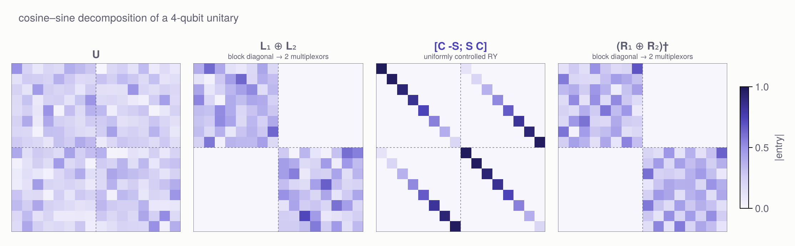
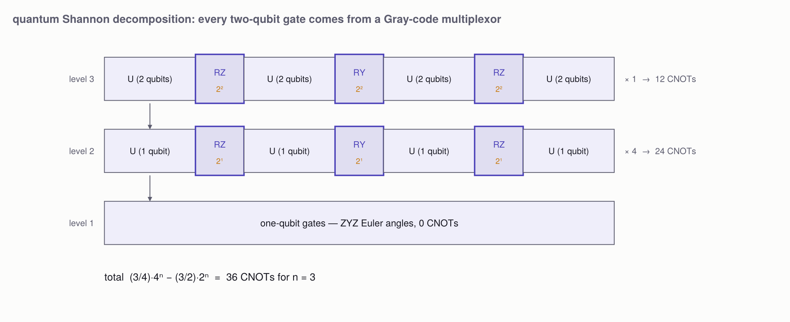
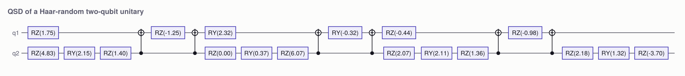

The hardest case: an arbitrary unitary
Every other decomposition in this package exploits structure. A multiplexor is block diagonal. A diagonal unitary is a phase function. A state-preparation target is a vector, not a matrix. Take all of that away — hand the compiler a 2ⁿ × 2ⁿ unitary with no structure at all — and you are left with the hardest of the standard problems.
The quantum Shannon decomposition is the standard answer, and its entire skeleton is Gray-code multiplexors.
Why it is hard
The naive route is the one on the Applications page: factor U into two-level (Givens) rotations and route each with CNOTs. It is exact, and it is bad — there are O(4ⁿ) factors and each one drags a multi-controlled gate behind it.
U = rand_unitary(8)
tl = synthesize_unitary(U; lower = true)
matrix(tl) ≈ U, length(tl), count_cnots(tl)(true, 241, 98)98 CNOTs for three qubits, and it degrades fast. The parameter count says we should do much better: a unitary in U(2ⁿ) has 4ⁿ real parameters, and each CNOT plus its surrounding one-qubit gates buys a constant number of them, so Θ(4ⁿ) CNOTs is the floor. The two-level route pays an extra factor of n.
One level of the recursion
Split the register at the top wire. Two classical factorisations then peel that wire off entirely.
Cosine–sine. Any unitary of even dimension factors as
\[U \;=\; (L_1 \oplus L_2)\;\begin{bmatrix} C & -S \\ S & C\end{bmatrix}\;(R_1 \oplus R_2)^\dagger\]
with C and S diagonal and C² + S² = I. Written on qubits, that middle factor is a uniformly controlled RY on the top wire — a Gray-code multiplexor, 2ⁿ⁻¹ CNOTs — and the outer factors are block-diagonal, i.e. multiplexed unitaries.
F = cosine_sine(U)
Matrix(F) ≈ U, round.(F.c, digits = 3), round.(F.s, digits = 3)(true, [0.976, 0.814, 0.707, 0.231], [0.218, 0.581, 0.708, 0.973])The claim about the middle factor is worth checking rather than believing:
C, S = Diagonal(F.c), Diagonal(F.s)
matrix(multiplexed_ry(csd_angles(F), 2:3, 1; n = 3)) ≈ [C -S; S C]truecsdfigure(rand_unitary(16))
Left to right: a structureless U, then the two block-diagonal factors and the four-diagonal cosine–sine pattern it resolves into. The dashed lines mark the split at the top wire.
Demultiplexing. Each block-diagonal factor is then split by demultiplex, L₁ ⊕ L₂ = (I ⊗ V)(D ⊕ D†)(I ⊗ W), and D ⊕ D† is a uniformly controlled RZ on the same top wire — another Gray-code multiplexor.
So one level emits three multiplexors and four (n-1)-qubit unitaries:
qsdfigure(3)
The cost
\[\mathrm{CNOTs}(n) = 4\,\mathrm{CNOTs}(n-1) + 3\cdot 2^{n-1}, \qquad \mathrm{CNOTs}(1) = 0\]
which solves to (3/4)·4ⁿ - (3/2)·2ⁿ.
[(n, count_cnots(qsd(rand_unitary(1 << n))), qsd_cnot_count(n)) for n in 1:4]4-element Vector{Tuple{Int64, Int64, Int64}}:
(1, 0, 0)
(2, 6, 6)
(3, 36, 36)
(4, 168, 168)Against the two-level route at n = 3: 36 CNOTs instead of 98, and the gap widens with n because the two-level method carries an extra factor of n while this one does not.
circuitfigure(qsd(rand_unitary(4)); title = "QSD of a Haar-random two-qubit unitary")
Every CNOT you see came out of a multiplexor, which is to say out of a Gray-code walk. Strip the Gray coding out and each multiplexor reverts to one multi-controlled rotation per branch — O(k·2ᵏ) instead of 2ᵏ — and the whole recursion picks up the factor of n again, landing back where the two-level method was.
Honest limits
- This implementation runs a constant factor above the literature's
(9/16)·4ⁿ, which is reached by handling the two-qubit blocks with a KAK (Cartan) decomposition — three CNOTs each — rather than recursing into them. KAK is not implemented here; it is the single largest remaining win. Further optimisations reach(23/48)·4ⁿ. - The decomposition is structure-blind. It spends the same 36 CNOTs on the identity as on a Haar-random unitary:
count_cnots(qsd(Matrix{ComplexF64}(I, 8, 8))), count_cnots(qsd(rand_unitary(8)))(36, 36)When you know the structure, use the routine that knows it too — diagonal for a diagonal, prepare_state for a state, multiplexed_1q for a multiplexor.
A numerical trap worth knowing about
The sines in the cosine–sine decomposition are not computed as sqrt(1 - c²). Near c = 1 that subtraction loses every significant digit: the true sine is 0, the computed one is √eps ≈ 1.5e-8, and the reconstruction formulas then divide by it. A block-diagonal input — where every sine is exactly zero — comes back with non-unitary factors and an error of order 1.
cosine_sine takes the sines as column norms of U₂₁R₁ instead, which is accurate to machine epsilon and vanishes exactly when it should.
F = cosine_sine(cat(rand_unitary(4), rand_unitary(4); dims = (1, 2)))
maximum(F.s), all(is_unitary(M) for M in (F.L1, F.L2, F.R1, F.R2))(0.0, true)Columns whose sine is genuinely zero are a real gauge freedom — nothing outside the top-left block constrains them — so those columns are completed to an orthonormal basis and their partners read off where the cosine is near 1.
Reference
QuantumCircuits.qsd — Function
qsd(U) -> CircuitQuantum Shannon decomposition of an arbitrary 2ⁿ × 2ⁿ unitary into CNOTs and one-qubit gates. See qsd!.
U = rand_unitary(8)
c = qsd(U)
matrix(c) ≈ U # exact, global phase included
count_cnots(c) # 36QuantumCircuits.qsd! — Function
qsd!(c, U, qubits) -> cAppend an arbitrary unitary on qubits, by the quantum Shannon decomposition.
One level peels the top wire with a cosine_sine split and two demultiplex steps, emitting three Gray-code multiplexors — one RY from the cosine–sine middle, one RZ from each side — and recursing on four (n-1)-qubit unitaries. The recursion bottoms out at decompose_1q!.
CNOTs(n) = 4·CNOTs(n-1) + 3·2^(n-1), CNOTs(1) = 0
= (3/4)·4ⁿ - (3/2)·2ⁿwhich is 36 CNOTs at n = 3 and 168 at n = 4, against roughly O(n·4ⁿ) for the two-level route of synthesize_unitary — 98 CNOTs at n = 3 and far worse beyond. The literature's (9/16)·4ⁿ needs the two-qubit blocks handled by a KAK decomposition instead of recursing; that is not implemented here, so this runs a constant factor above the best known.
QuantumCircuits.qsd_cnot_count — Function
qsd_cnot_count(n) -> IntThe CNOT count this implementation's recursion produces for n qubits, (3/4)·4ⁿ - (3/2)·2ⁿ. Useful for checking a synthesised circuit.
QuantumCircuits.cosine_sine — Function
cosine_sine(U; atol=1e-9) -> CSDCosine–sine decomposition of a unitary of even dimension, split into equal halves:
U = (L1 ⊕ L2) · [C -S; S C] · (R1 ⊕ R2)'The middle factor is the interesting one: written on qubits, [C -S; S C] is exactly a uniformly controlled RY with the top wire as target and the rest as controls — a Gray-code multiplexor, 2ⁿ⁻¹ CNOTs.
Implementation: one SVD of the top-left block gives L1, c and R1; the s-equations then give the columns of L2 and R2 wherever s is safely non-zero. Columns with s ≈ 0 are a genuine gauge freedom — nothing outside the top-left block constrains them — so those columns of R2 are completed to an orthonormal basis and the matching columns of L2 read off from the bottom-right block, where c ≈ 1 makes the division well conditioned.
The sines are taken as column norms of U21·R1 rather than from sqrt(1 - c²): near c = 1 that subtraction loses every significant digit and returns √eps ≈ 1.5e-8 where the true value is zero, which the s-equations would then divide into. atol is the threshold below which a sine counts as zero. Generic unitaries are nowhere near it; exactly-degenerate ones (block-diagonal inputs, the identity, permutations) land on it squarely and take the completion branch.
QuantumCircuits.CSD — Type
CSDThe result of a cosine_sine decomposition of a 2m × 2m unitary:
U = (L1 ⊕ L2) · [C -S; S C] · (R1 ⊕ R2)'with C = Diagonal(c), S = Diagonal(s) and c.^2 + s.^2 == 1.
QuantumCircuits.csd_angles — Function
csd_angles(F::CSD) -> Vector{Float64}The RY angles of the middle factor: θⱼ = 2·atan(sⱼ, cⱼ), so that [C -S; S C] is the uniformly controlled rotation RY(θⱼ) on the top wire.
QuantumCircuits.rand_unitary — Function
rand_unitary(N; rng=Random.default_rng()) -> Matrix{ComplexF64}A Haar-random N × N unitary, from the QR of a complex Gaussian matrix with the phase ambiguity fixed. Convenient for exercising the decompositions.
QuantumCircuits.csdfigure — Function
csdfigure(U; kwargs...) -> FigureThe cosine–sine decomposition of U, as four magnitude heatmaps in a row: U, the left block-diagonal factor L₁ ⊕ L₂, the cosine–sine middle, and the right factor (R₁ ⊕ R₂)†.
The middle panel is the point: its [C -S; S C] pattern is a uniformly controlled RY on the top wire, i.e. a Gray-code multiplexor, and the two outer panels are block-diagonal multiplexors that demultiplex into two more.
requires a Makie backend. Run
using Pkg; Pkg.add("CairoMakie") # once
using CairoMakie # loads the QuantumCircuits plotting extensionCairoMakie renders publication-quality vector output (save("fig.pdf", fig)); GLMakie or WGLMakie work too if you want an interactive window.
QuantumCircuits.qsdfigure — Function
qsdfigure(n=3; kwargs...) -> FigureSchematic of the quantum Shannon decomposition recursion on n qubits: each level emits three Gray-code multiplexors — one RY from the cosine–sine split, one RZ from each demultiplexing step — and four (n-1)-qubit sub-problems, of which the diagram follows one.
Multiplexor boxes carry their CNOT count, and each row its level total.
requires a Makie backend. Run
using Pkg; Pkg.add("CairoMakie") # once
using CairoMakie # loads the QuantumCircuits plotting extensionCairoMakie renders publication-quality vector output (save("fig.pdf", fig)); GLMakie or WGLMakie work too if you want an interactive window.